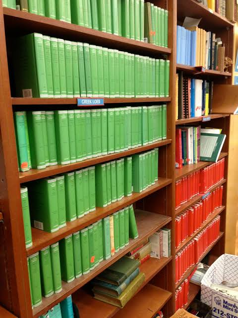

More info about books

In this page I'd like to give both a view of wider reading trends and my own personal tastes in books, so you can get a good sense of popular books and get started on picking out your next new book. I've included a list of some of the books I've completed this year, as well as a visualization of the publication dates of the books in Wikipedia's "Best Selling Books" list so you can see how well different time periods are represented in the most popular books of our era. Note that the data from Wikipedia specifically tracks the number of sold books, rather than books printed. Also, the values given for book sales are only estimates and do not completely accurately track the number of books sold (which would be near impossible, especially for books that are older). The Wikipedia page also contains information about authors and the language of initial publication, as well as links to the Wikipedia pages for books that have their own dedicate pages. I would recommend the Wikipedia page as a starting point for someone who's looking to check out a new book but has no specific genre or author preferences and wants to try something new.
Some books I've read in 2026!
- A Clockwork Orange
- Mother Mary Comes to Me
- Mother Night
- Confessions of a Mask
Visualization of best-selling books by publication date
Loading best-selling book data…
Books with publication date ranges are counted by the first year listed. Source: Kaggle best-selling books dataset.